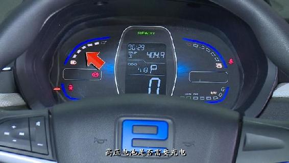
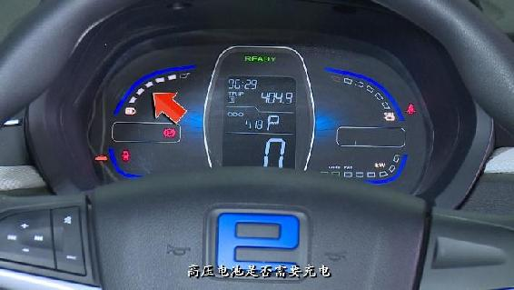
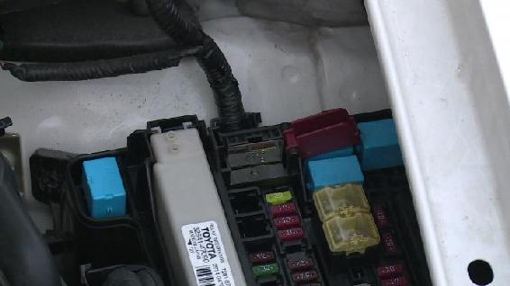
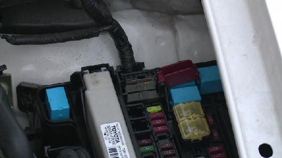
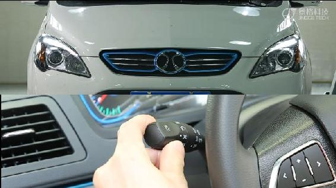
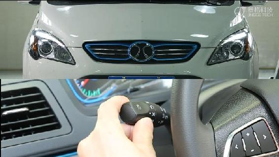

新能源汽车使用与维护
前 言
随着生活水平的不断提高和科学技术的不断发展，交通工具也在不断的发生 着变化，从畜力车时代逐步进入新能源汽车时代。时至今日，新能源汽车走进千 家万户，广受青睐。如何使用新能源汽车并对新能源汽车进行必要的维护成为了 广大用户的一大热门话题， 《新能源汽车使用与维护》教材能解决广大用户的疑 虑。
1.新能源汽车使用是让使用者或者对新能源汽车感兴趣的人员会使用和驾驶 新能源汽车。
2.新能源汽车维护是指保持和恢复新能源汽车的技术性能，保证新能源汽车 具有良好的使用性和可靠性。正确的维护能使新能源汽车的使用寿命延长，安全 性能提高，既省钱又免去许多维修的烦恼。
《新能源汽车使用与维护》是调研了一些具有代表性的维修企业和汽车 4S 店，并对新能源汽车技术发展和新能源汽车服务市场需求进行分析，将调研和分 析内容进行梳理和整合的一门全新课程。
本书将实际工作项目引入到教材中，教学过程严格按照维修厂和 4S 店的作 业过程，坚持“教、学、做”一体化，培养学生的职业意识，并通过学校与企业 的合作，归纳精选常见车型的使用方法和维护项目，设计一定数量的教学项目， 通过项目化教学使学生能通过有限的、具有代表性的典型案例，尽快掌握新能源 汽车使用方法和维护技巧。
《新能源汽车使用与维护》全书分 3 个项目 8 个任务，主要讲授新能源汽车 高压安全防护、新能源汽车驾驶与操作、新能源汽车应急处理、驱动系统维护、 充电系统维护、辅助系统维护、直流充电桩使用与维护、交流充电桩使用与维 护。本教材内容新颖、知识广泛、结构合理。排版新颖，图文对照、深入浅出、 通俗易懂；让学习者在系统学习新能源汽车使用与维护各种知识的同时，也可以 了解新能源汽车现状和发展方向。
本教材作为高职高专教材使用，也可以作为汽车工程技术人员，中等职业学 校汽车专业教师的参考教材使用。
由于新能源汽车技术的飞速发展，导致各个修理厂生产的新能源汽车技术设 计差异很大，技术含量不尽相同，教材中难免会有错漏之处，希望读者不吝指正。
项目一 新能源汽车使用
项目描述
随着我国汽车保有量的激增，越来越多的城市不得不面对尾气排放造成的诸多难题，面对 这些问题，推广新能源汽车迫在眉睫。为此，国家相应出台了一系列的惠民政策，鼓励民众购 买新能源汽车， 新能源汽车慢慢进入大众视野且热度也与日俱增， 近年来生产率同比增长 3 倍， 新能源汽车渐渐成为一种潮流。
当新能源汽车越来越被人熟知的同时，购车者的心中也留下了一个大大的问号，新能源汽 车安全吗？在使用过程需要注意什么呢？在本项目中将会详细介绍新能源汽车使用的相关知 识，帮助购车者解除留在心中的疑问。
学习目标
（1）了解新能源汽车的高压安全的重要性；
（2）掌握新能源汽车高压防护的注意事项和防护措施；
（3）了解新能源汽车的充电方式与充电中注意事项；
（4）能对新能源汽车进行驾驶操作；
（5）能认识新能源汽车故障指示灯；
（6）能对新能源汽车进行必要的应急处理。
知识准备
一、高压防护的重要性 随着科技的进步，电动汽车越来越普遍，因此它的安全性也越来越受到人们的关注。电 动汽车在充电及运行过程中，可能出现意外事故，造成动力系统的窜动、挤压、短路、开裂、 漏电、热冲击、爆炸、燃烧等，由此对乘员产生机械伤害、电伤害、化学伤害、电池爆炸伤 害以及燃烧伤害等，并可能引发更大的连发性事故以及二次伤害。电动汽车的安全性及其防 范技术正在引起世界各国相关专家的高度重视。
3 人体能够承受的安全电压是指一定强度的电流通过人体而没有引起任何伤害事故的电 压，因此安全电压的大小取决于人体允许通过的电流和人体电阻。根据国家有关安全标准， 人体允许电流不能超过 30mA，在某些特殊场合下将更小。人体电阻主要是由体内电阻、皮肤 电阻和皮肤电容组成。人体电阻随着条件的不同在很大范围内变化，但是，人体电阻一般不 低于 1000Ω。我国安全电压多采用 36V，即大体相当于危险环境下的安全电压。有的国家规 定 2.5V 为一级的安全电压值，即相当于人体大部分浸入水中，且如果不能摆脱带电体或强烈 痉挛即可导致致命的二次事故的情况。同时，根据国际电工标准（IEC 60529） ，为蓄电池驱 动的道路车辆提供能量的电气装置，对正常工作中的触电防护要求为在任意可接触的触点间 的峰值电压应低于 42.3V。电动汽车动力系统在危险工况下，避免人体电伤害的安全电流应 小于 30mA。由于动力蓄电池在危险工况下可能会出现短路，短路的巨大电流会使短路处甚至 使整个电路过热，从而导线的绝缘层燃烧起来，并引燃周围的可燃物，乘员也可能因接触带 电体而发生电伤害。因此，需要高压安全防护。
二、新能源汽车安全与防护注意事项 （一）个人防护 要带好防高压电手套如图 1-1 所示、护目镜如图 1-2 所示，防高压电手套至少应该能防 1 千伏以上的高压。
图 1-1 防高压电绝缘橡胶手套 图 1-2 护目镜
（二）安全防护警示 电动汽车上，导线的颜色表示特定的含义，鲜艳的橙色电缆用来警示有高压电危险，对 于一些橙黄色导线要引起注意，因为可能有高压危险。
图 1-3 警示标志
三、新能源汽车高压安全与防护措施 在正常操作时，通过绝缘防护、搭铁电阻、外壳防护等级、泄漏电流等措施提供电气防 护。
环境条件和可能发生的意外事件都可能使得这种保护的强度降低。因此，高压系统配置 了绝缘监测功能，一般采用漏电传感器对高压系统进行绝缘监控。
车辆保养时，采用紧急维修开关进行安全防护。
异常使用时（例如碰撞、非正常操作断开高压连接器等） ，采用高压互锁、高压泄放（主 动放电、被动放电）保障使用安全。
在电路设计时，应能满足电气间隙、爬电距离等要求，并具备各类过压、过流、短路防 护功能。
新能源汽车在运行过程中，如果出现异常情况，仪表会以声音或指示灯的形式进行报警 提醒驾驶员，让驾驶员注意车辆的异常情况，以便及时处理，避免发生安全事故。
新能源汽车在运行过程中，如出现系统严重故障时，整车控制系统会切断新能源汽车电 源，确保财产和人身安全。
高压线束走向要求布置在车辆骨架内侧，以提高对高压线束和人员的保护作用。
动力电池与车体应实现二次绝缘，动力电池内要设置烟雾温度报警系统，以便能及时对 事故做出正确处理，确保人身和财产安全。
车辆安装碰撞传感器和绝缘电阻检测装置。当车辆发生碰撞或绝缘电阻过低时，主动切 断高压回路，实现动力电池与外部电路的隔离。
当发生事故时，可以手动切断各动力电池之间的连接，将车辆整体电压降至安全电压范 围内。
作业准备
作业准备
（a）绝缘手套 （b）绝缘胶鞋
技能操作
高压系统安全操作步骤：
1.切断车辆电源（将启动按钮打在 OFF）， 等待 5 分钟；
2.穿戴好绝缘手套、绝缘胶鞋等防护用具， 如图；
3.拔下维修开关并存放在规定的地方；
4.对高压系统进行检查并记录相关数据， 在车辆有电时应该通知正在检查、维修高压系 统的人员。在检修时做好高压系统的绝缘防护 处理；
5.对高压系统检修后一定要将拆卸或更换 过的零部件进行检查，避免因检修后忘记恢复 造成其他影响。
图 1-4 穿戴防护用具
注意事项
1.在车体高电压或高温处均有“警告标示” ，严格按标示要求操作；
2.洗车时请勿将高压水枪向充电口部位喷射，以避免充电口进水，发 生触电危险；
3.使用指定的充电插座及充电线，切勿自行选择充电设备；
4.当车辆着火时消防进行灭火，禁止使用“水浇法”，采用“干粉” 灭火器；
5.车辆维修时，不可车体湿润或带水操作；
6.电池包更换时，注意防酸碱，使用工业“防碱手套” ，并佩戴放护 目镜；
7.禁止正负对接，避免正极或负极经人体接地；
8.拆开的高压线接口要绝缘处理。
9.双人操作，一人监护，一人操作！
思考与练习
一、选择题 1.高压电缆是作为警示标志代表高压电危险，那么它用什么颜色表示？（ ）
A.鲜艳的橙色
B.鲜艳的黄色
C.鲜艳的红色 D.鲜艳的蓝色
2.对电动汽车进行高压操作时，需要佩戴那种防护用具？（ ）
A.不需要佩戴防护用具 B.亚麻手套 C.绝缘手套 D.棉布手套
3.在高压操作时，以下哪一项是不允许的？（ ）
A.切断车辆电源
B.穿戴好绝缘手套、绝缘胶鞋等防护用具
C 灭火时，采用“干粉”灭火器
D.带水操作
4.人体允许通过的电流不能超过多少 mA？（ ）
A.30mA B.40mA C.50mA D.60Ma
二、判断题
1.当发生事故时，可以手动切断各电池箱之间的电连接。 （ ）
2.新能源汽车充电时可以自行选择充电设备。 （ ）
3.高压线束走向要在车辆骨架内侧。 （ ）
4.电动汽车在运行过程中，如出现系统严重故障时，控制系统会立即停止车辆。 （ ）
5.拔下维修开关后，应该将维修开关存放在规定的地方。 （ ）
知识准备
一、车辆使用 （一）电子驻车开关（EPB） 电子驻车制动开关，取代传统的制动杆。
图 1-5 电子驻车制动开关
1. 手动拉起 EPB 向上拉起电子驻车制动开关，仪表上的指示灯会先闪烁，电子驻车制动指示灯常亮代表 电子驻车制动开关已拉起，并有文字提示“电子驻车已启动” 。
2.EPB 自动拉起 “启动/停止”按钮转至 OFF 档，EPB 会自动拉起，仪表上指示灯会点亮并有文字提出“电 子驻车已启动” 。
3. 手动释放 按下“启动/停止”按钮至 ON 档，持续踩住制动踏板并向下按一下开关，直至仪表上的 指示灯熄灭，即表示已释放电子驻车，并有文字提示“电子驻车已解除”。
4. 汽车起步时自动释放 EPB 车辆处于驻车状态，启动车辆，持续踩下制动踏板，将档位由 P 或 N 档挂入 D 或 R 等行 驶档位后，EPB 会自动释放，指示灯熄灭，并有文字提示“电子驻车已解除”。
当车辆已经启动，档位处于 D 或 R 等行车档位时，手动拉起 EPB 后，只需踩下油门踏板 到一定深度，EPB 会自动释放，指示灯熄灭，并有文字提示“电子驻车已解除”。
5. 坡道起步 当车辆需要在坡道起步时，请先确认 EPB 已经拉起（指示灯点亮则 EPB 已经拉起），如 果 EPB 没有拉起，手动拉起 EPB。然后按照第 4 步操作。
6. 应急制动功能 车辆行驶过程中需要制动，发现行车制动失效或者受阻时，可持续拉起 EPB 开关，强制 对汽车进行制动，将车辆停下来。此时仪表上的指示灯会点亮，并发出警报声和文字提醒“电 子驻车未解除” 。
（二）新能源汽车组合仪表组成
混合动力汽车（以比亚迪秦为例）的仪表（如图 1-6 所示）包括：行车形象表、车速表、 功率表、电量表、发动机转速表、燃油表、冷却液温度表、里程数表、档位表等组成。
车速显示
行车形象显示
发动机转速
功率显示
燃油显示
电量显示
档位显示
冷却液温度显示
里程数
图 1-6 新能源汽车组合仪表（比亚迪秦）
纯电动汽车（以北汽新能源为例）仪表（如下图 1-7 所示）包括：电量表、电机转速表、 里程显示表、档位显示表等组成。
里程显示表 档位显示表
电机转速表
图 1-7 新能源汽车组合仪表（北汽新能源 EV160）
二、车辆驾驶 （一）换档操纵杆类型 新能源汽车的换档操纵机构保证驾驶员能准确而可靠的挂入所需档位。 基本有 3 种形式：旋钮式、换挡杆式和换档开关式。大多数汽车换档操纵杆布置在驾驶员座位附近。
（a）旋钮式 （b）换档杆式
（c）换档开关式
图 1-8 换档操纵杆类型
图 1-9 旋钮式换档操纵 图 1-10 E 档档位提示
（二）旋钮式换档操纵 旋钮式换档操纵，见图 1-9，以北汽新能源 EV160 为例，档位指示位于旋钮式电子换挡 面板上。整车通电后，背景灯点亮。
R：倒档。
N：空挡。
D：前进挡。
E：能量回收档。
E+，E-：能量回收强度，见图 1-10，最大为 3 档能省 14%的电量，最小为 1 档能省 7% 的电量。以最大效率将动力回收为电动，以换取最大的续航里程。
（三）换挡杆式 图 1-11 换挡杆式换档操纵 图 1-12 Dual Mode 系统工作模式旋钮
换档杆式换档操纵，见图 1-11，以比亚迪秦为例，换挡杆只起到前进、倒车和空挡的作 用，Dual Mode 系统工作模式旋钮起到纯电动模式与混合动力模式相互切换的作用。
EV：Electric Vehicle 纯电动模式，如图 1-13 所示。
图 1-13 纯电动模式 图 1-14 双引擎模式
HEV：Hybrid Electric Vehicle 混合动力模式，如图 1-14 所示。
ECO：经济模式，如图 1-15 所示。
图 1-15 经济模式 图 1-16 运动模式
SPORT：运动模式，如图 1-16 所示。
Dual Mode 系统：代表 2 种模式如图 1-17 和 2 种引擎如图 1-18，2 种模式分别是 EV 模式和 HEV 模式，2 种引擎是为发动机和电动机。
图 1-17 两种模式 图 1-18 两种引擎
EV+ECO 纯电经济模式：电动机工作，发动机不工作，踩下加速踏板控制器是缓慢增大 电机的电流，车速慢慢提升。
EV+SPORT 纯电运动模式：电动机工作，发动机不工作，踩下加速踏板控制器是直接用 最大电流供给电机，车速迅速提升。
HEV+ECO 双驱经济模式： 时速低于 40KM 和电量高于 20%时不使用发动机，超过 40KM 时发动机自动启动，只提供 10%的动力给车辆，控制器同样还是缓慢增大电机的电流，并且 为电池充电。如果时速低于 40KM，电量低于 20%时同样会启动发动机，不过不给车辆动力， 怠速充电，只要一直不超过 40KM，那么电池充电充到 25%以上后发动机会自动熄火。
HEV+SPORT 双驱运动模式：发动机一直工作，停止和起动只能靠手动来进行。发动机 以 100%的动力传输给车轮，电机也是用最大功率使用。
图 1-19 换档开关式
（四）换挡开关式
换档开关式换档操纵，见图 1-19，以特斯拉为例，换档开关设置在方向盘的后方以拨杆
的形式进行换挡， “P”档以按钮的形式进行操作。
三、充电操作 （一）充电类型 1. 车载充电 车载充电不管车载蓄电池在任何时候、任何地方需要充电，只要有充电机额定电压的交 流插座，就可以对电动汽车进行充电。
2. 非车载充电 固定安装在电动汽车外、与交流电网相连 接，为电动汽车动力电池提供直流电能的充电 机。
图 1-20 非车载充电
二、充电安全警告 选择在相对较安全的环境下充电。
禁止拆卸充电设备及相关端口。
充电前确保车辆供电设备和充电连接装置的充电端口内没有水或异物以及金属端子没 有生锈或者腐蚀。
在充电时车里车内有异味或者烟雾，请立即停止充电。
为了避免造成严重的人身伤害，车辆正在充电时，要有以下预防意识：
——不要接触充电端口；
——当有闪电时，不要给车辆充电或触摸车辆，闪电击中可能导致充电设备损坏，引起 人身伤害，如图 1-21 所示。
图 1-21 遭遇雷电袭击 图 1-22 不要以湿手触摸充电连接装置
充电结束后，禁止以湿手或站在水里时去断开充电连接装置，否则可能引起电击，造成 人身伤害，如图 1-22 所示。
车辆行驶前确保充电连接装置从车辆充电口断开。
如果在车内使用医药设备，使用之前和制造商确认充电是否影响设备的正常工作，充电 时可能导致设备的不正常操作，造成人身伤害。
禁止在下雨天进行充电。
三、充电安全注意事项 当仪表电量指示条进入红色警戒格时，表明动力电池电量已不足。建议在电量降至警戒 红格时及时充电，确保不会因电量不足而无法使用纯电动模式，不建议在电量完全耗尽后再 进行充电，否则会影响动力电池的使用寿命。
在电池的合理工作范围内对车辆进行充电，当电池温度过高或过低时，车辆不能正常充 电，需要进行电池降温或保温处理。
家用交流充电是使用车辆配备的交流充电连接装置进行充电。推荐使用 220V50Hz，16A 的专用交流电路和电源插座。专用电路是为了避免线路破坏或者由于给动力电池充电时的大 功率导致线路跳闸保护，如果没有使用专用线路，可能影响线路上其他设备的正常工作。
为了避免对充电设备造成破坏：
——不要在充电口盖打开的状态下关闭充电口舱门；
图 1-23 不要忘记关闭充电口盖
——不要用力拉或者扭转充电电缆；
——不要使充电设备承受撞击；
——不要把充电设备放在靠近加热器或其他热源的地方。
当外部电网断电时，充电会自动重新启动充电，无需重新连接充电连接装置。
充电时，不建议人员停留在车辆内。
充电时，建议将车辆停放在通风处。
充电时，点火开关必须处于关闭状态。
当动力电池电量充满后，系统会自动停止充电。
停止充电时应先断开交流充电连接装置的车辆插头，再断开电源端供电插头。
启动车辆前确保充电连接装置已经断开，充电口盖和充电口舱门已经关闭，水或外来物 质可能进入充电口端子，影响正常使用。
当环境温度低于 0°时，充电时间要比正常时间要长，充电能力较低。
如果车辆长时间不使用，为了延长动力电池的使用寿命，建议每 1 个月充电一次。
不要将车辆搁置在超过 55℃以上环境下超过一天；或低于负 25℃环境下超过一天。
电动车长期停放后的首次使用前需进行均衡充电，充电时间需在 8 小时的基础上适当延 长以完成充电均衡。
动力电池充电完成所需时间因充电方法、剩余电量、实时温度、使用时间、环境温度、 条件而变化，用户手册里给出的数据与实际充电所需时间会有差别。
当有快速充电桩时，才能给车辆进行快速充电。车辆避免频繁的快速充电，因为快速充 电会影响动力电池的使用寿命。
动力电池的可用能量会随着使用时间的延长而逐步衰减。如果动力电池的使用时间已经 很长，充满电时动力电池电量也不会指示在 100%附近。
作业准备
作业准备
（a）比亚迪秦 （e）充电桩
（c）荣威 E50 （d）充电枪
技能操作
一、新能源汽车驾驶与操作（比亚迪秦）
（一）充电 充电前确保车辆处于“P”挡，且车 辆已经停稳。
按下驾驶室车门上的充电口开关，打开后备箱上的充电口，充电口盖。将充电插头插入电动车充电插座， 直到听到一声轻响。
充电中接通 220V 交流电源后，充 电装置将自动运行，黄色灯一直闪烁说 明车辆正在充电。
红色等闪烁说明存在故障，需进行 检修。
充电后，先从充电座上拔出三线插头。
按住黄色锁止按钮，将充电枪从车 上拔出。
将充电座的保护盖盖住，然后盖住
电动汽车充电口外部充电盖。
当车辆需要慢充时，可以利用家用 电源 6-8 小时全部充满。
充电过程中，仪表显示相关充电参数，同时显示充电动画；
注意事项
车辆行驶前确保充电枪、充电设备和车辆已经完全断开。
（二）汽车驾驶
1. 汽车驾驶前准备
确认携带智能钥匙。
按下 power 按钮，当仪表上的 OK 点亮后，使车辆达到可行驶状态。
注意事项
1.因为是纯电动模式，所以有可能听不到发动机起动的声音。
2.OK 点亮说明车辆可以正常行驶。
2. 汽车驾驶前的模式选择 （1）EV-ECO 纯电经济模式
按下 EV 按钮，按钮上的指示灯呈 绿色。
将旋转按钮旋转至 ECO 模式。
当 SOC 电量在 20%以上时，默认纯 电经济模式为常规启动模式。
（2）EV-SPORT 纯电运动模式
按下 EV 按钮，按钮上的指示灯呈 绿色。
将旋转按钮旋转至 SPORT 模式。
（3）HEV-ECO 双驱经济模式
按下 HEV 按钮，按钮上的指示灯呈 绿色。
将旋转按钮旋转至 ECO 模式。
双驱经济模式下，为了保证较好的 经济性，系统会根据 SOC 电量的多少， 在电动机和发动机相互切换。
（4）HEV-SPORT 双驱运动模式
按下 HEV 按钮，按钮上的指示灯呈 绿色。
将旋转按钮旋转至 SPORT 模式。
双驱运动模式需要确认 SOC 电量 在 30%以上，双引擎同时输出。
（5）根据驾驶需要选择不同驾驶模式
注意事项
1.从 ECO 经济模式切换到 SPORT 运动模式时，车辆将立即输出比原来 更强劲的动力；
2.根据电池电量和车速，在纯电经济模式下车辆会出现发动机频繁启 动和停止现象，这属于正常的经济运行模式；
3.在车辆减速时，能量回收系统能回收能量，为了更有效的使用，不 要对车辆进行不必要的加速和减速。
（三）遥控驾驶 将遥控钥匙划开，且长按 3 秒起动 按钮，车辆起动。
按遥控钥匙向前，车辆向前。
按遥控钥匙向后，车辆向后。
按遥控钥匙向左或向右，车辆向左 或向右。
新能源汽车驾驶与操作
将遥控钥匙划开，且长按 3 秒起动 按钮，车辆熄火。
二、新能源汽车驾驶与操作（荣威 E50） （一）车辆驾驶 1. 车辆检查 车辆在行驶前都应该对车辆进行 检查。环车一周，检查轮胎以及地面上有 无油液、冷却液和异物。
打开机舱盖检查制动液、冷却液。
进入车内，打开点火开关，检查仪 表上高压电池的电量，检查档位是否在 P 档。
2. 驾驶前的操作 系好安全带，踩下制动踏板，起动车辆，检查仪表是否有故障灯点亮。关 闭驻车制动，将档位挂到 D 档，慢慢松 开制动踏板，车辆慢慢起步。
3. 驾驶时的观察 驾驶时需要留意车速，高压电池的 电量。
驱动电机的水温以及仪表的指示 灯是否有警告灯点亮。
观察功率表在加速时是否为正值， 松开加速踏板后功率为负值。
4. 停车后的操作
车辆停稳后，档位换到 P 档。
起动驻车制动，检查仪表是否有警 告灯点亮，驱动电机的水温是否正常， 高压电池是否需要充电。
（二）车辆充电操作 1. 慢充接头 打开慢充充电接头外盖。
慢充为 7 脚插孔，充电电压为常用 居民用电 220V，16A。
注意事项
1.在选用接线板时，必须达到 3.3KW，16A 以上的功率要求。
2.在常温下，从低电量报警状态到充满电，大约需要 6 个小时。
2. 快充接头 打开快充接头盖。
快充为 9 脚插孔，快充须在充电桩 上进行充电。
注意事项
1.在常温下，从低电量报警状态至充电 80%，大约需要 30 分钟。
2.快充前的工作：关闭点火开关、拔出钥匙，等待 10 秒钟。
思考与练习
一、选择题 1.新能源汽车快速充电时，从低电量报警状态至充电 80%？，大约需要多少时间？（ ）
A.20 分钟 B.30 分钟 C.6 小时 D.8 小时
2.北汽新能源 EV160 电动汽车 E 档的作用是？（ ）
A.能量回收挡 B.前进挡 C.倒车挡 D.空挡
3.比亚迪秦的换档操纵杆是什么形式？（ ）
A.旋钮式 B.换挡杆式 C.换档开关式 D.按钮式
4.新能源汽车快速充电口有多少孔？（ ）
A.6 B.7 C.8 D.9
二、判断题 1.当动力电池电量充满后，需要手动停止充电。 （ ）
2.雷雨天不易在室外对新能源汽车进行充电。 （ ）
3.当外部电网断电时，充电会自动重新启动充电，无需重新连接充电连接装置。 （ ）
4.如果在充电时发现车里散发出一种不同寻常的气味或者烟，请立即停止充电。 （ ）
5. 车载充电不需要充电机额定电压的交流插座，就可以对电动汽车进行充电。 （ ）
一、故障警告灯及含义 新能源汽车的故障灯多数与传统汽车含义相同，但是有些是新能源汽车上特有的指示和 警告灯，如图 1-24 至 1-31 所示。
图 1-24 电机温度过高 图 1-25 动力电池温度过高
（1）电机温度过高，见图 1-24，表示汽车电机及控制器过热，需要靠边停车，自然冷却。 如果故障灯熄灭可继续行驶，如果故障灯不熄灭或者频繁亮起，则需要与专业人员联系。
（2）动力电池温度过高，见图 1-25，表示动力电池过热，此时不要继续行驶，应靠边停 车，等待动力电池冷却，故障灯熄灭后再行驶，如故障灯不熄灭或者频繁亮起，需要与专业人 员联系。
图 1-26 动力电池故障 图 1-27 动力电池断开
（3）动力电池故障，见图 1-26，动力蓄电池可能存在故障，需要与专业人员联系。
（4）动力电池断开，见图 1-27，表示动力蓄电池不能提供动力来源，蓄电池动力已切断， 需要与专业人员联系。
图 1-28 系统警告故障灯 图 1-29 动力蓄电池电量不足指示灯
（5）系统警告故障灯，见图 1-28，这个故障灯出现频率较高，大多数时候会与其他故障 灯一同亮起，表示动力系统故障。如果是这个故障灯单独亮起，则代表系统总线通讯出现故障， 需要与专业人员联系。
（6）动力蓄电池电量不足指示灯，见图 1-29，当动力蓄电池电量低于 30%时候，该指示 灯亮起。表示动力蓄电池电量不足，可能不能满足驾驶里程的需求。这个时候，就需要及时充 电了，当动力蓄电池电量高于 35%时，故障灯就会熄灭。
图 1-30 充电指示灯 图 1-31 车辆准备就绪指示灯
（7）充电指示灯，见图 1-30，车辆进入充电准备状态时，仪表文字提示“请连接充电枪”； 车辆充电枪连接后，该指示灯点亮，对于慢充作业，在充电完成经过数秒后，车辆会进入休眠 状态，该指示灯熄灭。
（8）车辆准备就绪指示灯，见图 1-31，该灯表示车辆已经准备就绪可以行驶，在行驶过 程中，该灯不会熄灭。
二、应急处理
（一）漏电处理 由于新能源汽车为电力驱动，有高压元件，驾驶员必须特别注意绝缘报警系统（在新能源 汽车组合仪表上会有提示文字出现） ，若发生绝缘报警，按以下步骤进行处理：
1.充电过程中发生绝缘报警时，应立即关闭充电电源，并拔下充电枪，通知专业人员前来 处理；
2.车辆行驶过程中，发生绝缘报警时，驾驶员需尽快将车靠边，停止行驶，疏导乘客有序 下车，在报警原因尚未排除之前，驾驶员不能强行启动车辆继续前行。
（二）电池温度异常及处理 驾驶员在行驶过程中，要特别注意电池温度，如果发现某只电池温度超过规定值时，则需 停车打开电池舱盖查看电池，如有异味或者电池舱内有烟冒出，则按以下程序处理：
1.紧急将车辆靠边停好；
2.切断新能源汽车高压（将手动检修开关拔掉） ；
3.打开电池舱盖，将电池箱猛的拉出车体，尽量将电池远离车体，操作过程中注意电池箱 滑出时砸伤；
4.电池拉出后，尽量将车与电池隔离 5 米开外，需要与专业人员联系。
（三）发生火灾处理 由于机械故障和人为因素，造成车辆设施、零部件失灵或引起火情的出现，应急处理方法 如下：
1.佩戴绝缘手套，关闭高、低压电源；
2.如果发现火情，则取出灭火器，给车厢和燃烧部分降温灭火，避免火势蔓延，并立即拨 打“119”火警求助，车辆属于纯电动车或者混合动力汽车，须用干粉灭火器进行灭火。
（四）雨天行车注意事项 1.雨中行车，遇有积水区时，应低速行驶，防止雨水冲刷，浸泡造成车辆损坏；
2.遇积水区较深时应立即停止行驶，并选择路段地势最高处停车；
3.若车辆出现漏电情况，应立即停车，切断电源，并与专业人员联系。
（五）车辆发生碰撞处理 如发生碰撞或突发撞击，高压惯性开关打开，自动切断高压供电系统，同时车门锁将开启， 车内照明灯点亮，危险警告灯闪烁，组合仪表上的高压电池包切断警告灯、直流/直流充电故 障警告灯、动力系统故障警告灯点亮，此时车辆将无法启动。
（六）跨接启动 在车辆行驶过程中，12V 蓄电池电量耗尽时，需要进行跨接启动。
跨接启动：如果自己车辆蓄电池没电无法启动，可以从其他车辆蓄电池借电启动的过程。
作业准备
作业准备
（a）普锐斯 （b）跨接启动线
一、跨接启动车辆 当 12V 蓄电池电压不足，车辆不能 起动时，可以对车辆进行帮助（跨接）起 动，使用车辆或者是 12V 的蓄电池，普 锐斯的跨接连接点在发动机机舱内。
取下保险丝盒盒盖，打开正极跨接 点。
将黑色跨接线连接车身搭铁，红色 正极跨接线连接该端子。
跨接线另一端分别连接 12V 蓄电池 的正负极。
注意事项
连接跨接线时，应注意正负极不能接反，连接必须可靠。
二、警示与报警信息 （一）一般的报警信息
停车后，车辆会对驾驶员的一部分 操作进行安全检测。当驾驶员没有切换 P 档，车辆会有文字提示和警告音，当切换 到 P 档后，文字提示和警告音消失。
（二）故障报警信息 打开点火开关后进行车辆自检，车 辆动力系统如果存在故障则会显示检查 混合动力系统，请将车辆停在安全地点 的文字信息，存在故障时，车辆不能起 动。此时驾驶员需要联系维修人员对车 辆进行维修。
思考与练习
一、连连看 1. 将图片与相对应的文字连起来 电机温度过高
动力电池温度过高
动力电池故障
动力电池断开
系统警告故障灯
动力蓄电池电量不足指示灯
项目二 新能源汽车维护
项目描述
新能源汽车在使用的过程中，需要按照保养手册进行定期维护，正确的定期维护有助于保 持汽车最佳性能、更高的可靠性和更长的寿命。
新能源汽车维护和传统汽车维护的目的是一致的，以清洁、检查、紧固、润滑、调整和补 给等六大作业为中心作业内容，目的在于保持车容整洁和消除故障隐患，防止车辆早期损坏。
本项目以纯电动汽车和混合动力汽车为切入点讲述新能源汽车维护事项和内容。
学习目标
（1）了解新能源汽车维护的目的；
（2）知道新能源汽车维护周期；
（3）了解新能源汽车维护的主要内容；
（4）掌握新能源汽车维护流程与内容；
（5）能按照维护保养单对新能源汽车进行维护。
知识准备
一、纯电动汽车维护的目的 纯电动汽车由大量的零部件构成，受车辆的使用时间和环境影响，有些零部件会因此磨损， 老化或腐蚀而降低性能，甚至会引起爆炸起火，所以纯电动汽车维护尤为重要。纯电动汽车的 维护包括以下几个方面：
1.润滑剂，油脂类（齿轮油）和液态类（制动液、冷却液）的定期检查、更换是非常重要 的，它会影响到电驱系统、能量管理系统、制动系统等的正常工作。由于这些油液具有润滑、冷却、防锈的功能，其在使用的过程中会逐渐减少、氧化、变脏，这是造成汽车零部件工作性 能降低和故障发生的原因之一，因此必须适时添加和更换。
2.橡胶制品，软管和套管等使用的是橡胶制品，橡胶制品具有柔软性，且易发生老化和磨 损。橡胶制品长时间的使用可能出现龟裂甚至断裂，产生安全隐患，因此应定期检查并更换新 的零件。
3.易损耗零件，汽车制动衬片、制动盘、轮胎等零部件，随着其发挥作用也会不断磨损。 而这些零部件也有一定的使用限度，如果超过磨损极限使用不仅会发生故障，重者还会造成事 故。
通过维护，可检查、评估纯电动汽车零件性能的好坏，再经过调整或更换来恢复其性能。
通过实施维护，可达到以下效果：
1）避免纯电动汽车由于较小的故障导致在以后出现较大的事故或故障；
2）使纯电动汽车保持在符合法规规章所要求的状态中；
3）延长纯电动汽车使用寿命；
4）顾客可享受既经济又安全的驾车体验。
二、纯电动汽车维护周期 维护项目和车辆的维护周期已经在使用手册的保养表单中体现。使用手册的保养表单是 由这些因素来规定的，如车型，车龄，车辆使用所在国家或车辆的用途（状态）。
维护周期根据行车距离和前次维修后至今的时间来决定。例如：如果某个具体零件的维修 计划规定为 3000 公里或 3 个月，则这些条件中满足任一条件时，就是维护期满日。
三、纯电动汽车维护的主要内容 纯电动汽车（以北汽 EV160 为例）各里程的维护项目如表 2-1 所示；在实际的操作过程 中，还会根据车主反映的用车情况作补充检查。
首保 3 个 定期保养项目
每 5000km 每 10000km 每 20000km 每 40000km
月/3000km
更换减速器油
更换制动液（或每 24 个月更换一次，两者以先到为准）
更换冷却液（或每 24 个月更换一次，两者以先到为准）
检查仪表显示及车身内外照明
检查用电设备功能（包括点烟器、电动摇窗机、电动后视镜、空调）
检查驻车制动器
安全带、安全气囊功能检测
检查雨刷器及清洗装置
检查电动天窗功能，清洁轨道用专用润滑脂润滑
检查制动液液面及制动管路
检查冷却液液面，冷却液冰点-45℃，检查系统是否泄漏
检查电动天窗排水管口
检查空调系统冷凝水排水口
检查转向横拉杆间隙及防尘罩
前后悬挂：检查四轮减震器及减震弹簧外观和紧固螺栓及螺母
制动盘制动片：检查制动盘、制动片厚度及磨损情况
底盘及动力电池系统螺拴：按规定扭矩检查拧紧
目测检查车身底部防护层是否破损
检查减速器油位，必要时添加或更换
检查轮胎磨损情况，校正轮胎气压，必要时进行轮胎换位。
按规定力矩紧固车轮固定螺栓
检查后轮制动片，制动鼓及制动分泵
检查车门铰链及车门限位器，门锁，行李箱盖铰链和锁扣
试车：动力性能、制动性能、平顺性、噪音、档位等
表 2-1 北汽 EV160 各里程的维护项目
四、纯电动汽车维护流程与内容 为提高工作效率和保证作业质量，纯电动汽车根据举升机举升汽车的位置将维护流程分 为 7 个顶起位置，每个位置对应不同的维护活动，如图 2-1 所示，各顶起位置主要作业内容如 表 2-2 所示：
图 2-1 北汽 EV160 3000 公里维护流程图
顶起位置
检查内容
检查仪表显示及车身内外照明
检查用电设备功能（包括点烟器、电动摇窗机、电动后视镜、 空调等）
检查驻车制动器
安全带、安全气囊功能检测
举升机未升起
电脑检测：用专用诊断设备读取各系统控制器内的故障存储信 息
检查雨刷及清洗装置
检查电动天窗功能，清洁轨道用专用润滑脂润滑
检查电动天窗排水管口
检查车门铰链及车门限位器，门锁，行李箱盖铰链和锁扣
检查轮胎磨损情况，校正轮胎气压，必要时进行轮胎换位，按 举升机升至中位
规定力矩紧固车轮固定螺栓
制动盘制动片：检查制动盘、制动片厚度及磨损情况
检查制动管路
前后悬架：检查四轮减振器及减震弹外观和紧固螺栓及螺母
举升机升至高位
检查空调系统冷凝水排水口
目测检查车身地步防护层是否破损
底盘及动力电池系统螺栓，按规定扭矩检查拧紧
检查制动液液位
检查冷却液液面，冷却液冰点-45℃，检查系统是否泄漏
检查空调制冷剂量
举升机升至低位，车轮 更换冷却液
触及地面
更换制动液.
检查减振器油位，必要时添加或更换
检查转向横拉杆间隙及防尘套
举升机升至高位
最终检查
举升机升至中位
制动液放空气
举升机未升起
清洁整理，试车
表 2-2 各顶起位置主要作业内容
作业准备
一、场地、车辆、工具准备 配置举升机、工作台；
（a）举升机
场地要求：照明、通风条件良好，并附带盖金属垃圾桶两个（回收金属、非金属用） 。
EV160 整车、工具车（配常用工具） 、零件车、轮胎架、汽车维修防护用品、车轮挡块、 工作灯、气压表、胎纹深度尺、180-200 毫米高的垫块、高压工具、护目镜、高压防护服、绝 缘手套、安全鞋等。
二、螺栓和螺母紧固要求
技能操作
一、3000km 维护（包含 5000km） 举升机未升起 1. 预检工作 车辆防护
安装车轮挡块；
使用钥匙打开车门，拉起驻车
制动杆；
安装地板垫；
安装换挡杆套；
安装方向盘套；
安装座椅套；
拉起发动机盖释放杆；
安装前格栅布和翼子板布。
2. 车身内外照明检查 （1）前示宽灯检查
转动车灯操纵手柄，使白色标 记“—”对齐示宽灯符号位置，前左、右 示宽灯点亮正常。
（2）前雾灯检查
转动雾灯开关手柄，使标记“—”对齐前雾灯位置，并发出“检查雾灯”的指示；
前左、右雾灯及仪表指示灯点亮正常。打开前雾灯必须要先打开示宽灯开关。
（3）前照灯检查
转 动 车 灯 开 关 手 柄 ， 使 标 记 “—”对齐变光符号位置，把开关轻轻往 前（后）推（拉）动，并发出“检查远（近） 光灯”的指示，同时检查远光指示灯是否 点亮；
前左、右远近光灯、远光指示灯 点亮正常。
（4）前照灯闪光和指示灯检查
把车灯操纵手柄快速地轻轻往 后拉、放，并发出“检查闪光灯”的指示；
前照灯闪光正常亮起，远光指 示灯点亮。
（5）转向灯检查
把转向开关往上、下方拨动，听 到“咔嗒”声后停止拨动，左转向灯点亮 正常；
把转向开关往上、下方拨动，听 到“咔嗒”声后停止拨动，右转向灯点亮 正常。
把转向开关往上、下方拨动，听 到“咔嗒”声后停止拨动，并发出“检查左转向灯”的指示，同时，检查转向指示灯是否闪烁；
前左、右转向灯、指示灯闪烁正常。
（6）检查危险警告灯
把 危 险 警 告 灯 按 钮 轻 轻 按 到
底，前左、后危险警告灯指示灯闪烁正
常。
把危险警告灯按钮轻轻按到底，并发出“检查危险警告灯”的指示，同时，检查指示 灯是否点亮；
再次按下危险警告灯开关按钮，关闭危险警告灯。
前左、右危险警告灯指示灯闪烁正常、左前危险警告灯点亮。
（7）检查后部示宽灯
转动车灯操纵手柄，使白色标 记对齐示宽灯符号位置，后左、右示宽 灯、牌照灯点亮正常。
（8）检查后雾灯
转动雾灯开关操纵手柄，使白 色标记“—”对齐后雾灯位置，后雾灯点 亮正常。
（9）检查后转向灯
往上、下方向轻轻拨动转向开 关，听到“咔嗒”声后停止拨动，发出“检查左（右）转向灯”的指示；
（10）转向灯开关自动回位功能的检查
上（下）转动转向灯开关；
顺（逆）时针转方向盘约 90°，把方向盘复位，变光器开关应自动回到中间位置；
转向灯开关自动回位功能应正常有效。
（11）检查制动灯
任务一 纯电动汽车维护
踩下制动踏板，制动能点亮正 常。
（12）检查倒车灯
倒车操纵杆置“R”位置，发出 “检查倒车灯”的指示，倒车灯点亮正 常。
（13）检查车辆内部顶灯
把顶灯开关拨到“ON”位置，检查顶灯是否点亮。
（14）检查仪表警告灯
起动纯电动汽车时，自行检查各种仪表警告灯是否点亮和熄灭。
3. 行车制动器检查 （1）行车制动器踏板使用状况检查
把启动开关开至“位置 2（ON）”，起动纯电动汽车；
踩下—松开行车制动器踏板数次，检查踏板是否能踩下和正常复位，是否灵敏。是否 过度松动、有异响。
（2）制动器踏板高度检查
把启动开关开至“位置 2（ON）”，起动纯电动汽车；
踩、松踏板数次。然后移开地毯，取钢尺垂直踏板踩踏面测量踏板与地板之间的距离， 即为踏板的高度；
（3）制动器踏板行程余量检查
移开车内地毯，在发动机运转和松开驻车制动器状态下，把踏板踩到底；
取钢尺垂直踏板踩踏面测量踏板与地板之间的距离，即为踏板的行程余量。
（4）制动器踏板自由行程检查
关闭启动开关，踩下制动踏板 30-40 次，解除制动助力器工作状态；
用手指轻轻按压制动踏板，同时，用钢尺测量踏板的移动量，即为踏板的自由行程。
（5）制动助力器工作情况检查
关闭启动开关；
制动踏板踩到底后，起动纯电动汽车；此时踏板应自动下沉一定的行程。
（6）制动助力器气密性检查
把启动开关开至“位置 2（ON）”，起动纯电动汽车；
踩压制动踏板 3-4 次后将制动踏板踩到底；
关闭启动开关，松开制动踏板后迅速踩下，每次踩压后，在 2-3 次踩下过程中，踏板 返回的高度是否越来越大。
（7）制动助力器真空功能检查
起动纯电动汽车后，把制动踏板踩到底；
关闭纯电动汽车，保持大约 30 秒钟后，检查踏板的高度是否产生变化。
4. 驻车制动器检查 （1）驻车制动器指示灯检查
把启动开关开至“位置 2（ON）”，起动纯电动汽车；
拉起驻车制动杆到达第一个槽口（锁止齿响第一声）时，指示灯应点亮；
技术要求：指示灯应正常有效。
（2）驻车制动器自由行程检查
拉满驻车制动杆行程；
听锁止齿轮响声。应发出 6-7 响的响声，否则应调整制动杆行程，或检修后制动器；
技术要求：制动杆行程应符合标准。
5. 喷洗器及雨刮器检查 （1）喷洗器喷洗压力及刮雨器协同工作情况的检查
把启动开关开至“位置 2（ON）”，起动纯电动汽车；
把喷洗开关按后轻轻拨满行程，固定数秒钟时间。检查喷洗液是否喷射有力、喷射点 是否在刮雨器工作范围内，刮雨器是否协同工作。
（2）雨刮器档位工作性能的检查
把启动开关开至“位置 2（ON）”，起动纯电动汽车；
把刮雨器档位开关往下方拨到
“间歇”档；检查刮雨器在该档位工作是 否正常有效，刮雨片刮水效果是否良好。
把雨刮器档位开关往下放拨到
“低速”档；检查雨刮器在该档位工作是
否正常有效，刮雨片刮水效果是否良好。
把雨刮器档位开关往下放拨到 “高速”档；检查雨刮器在该档位工作是 否正常有效，刮雨片刮水效果是否良好。
雨 刮 器 档 位 开 关 往 上 拨 到 “OFF”（关）位置，检查雨刮器是否完全复位。
6. 驾驶员侧位置检查（乘客侧相同）
（1）检查安全带状况（前后安全带检查方法相同）
拉出安全带检查肩带和跨带两边表面是否有损坏、刮痕。
按下肩带导向器按钮检查导向器是否上下灵活移动。
快速拉、放肩带，检查肩带安全锁定功能是否正常有效。
把安全带的带扣插进扣环，往 上拉动安全带，检查扣环锁止功能是否 正常。
技术要求：安全带表面无损伤、无刮痕；导向器、扣环锁止功能正常有效。
（2）检查车门铰链的紧固状况（四门相同）
抓住车门侧面边缘上下拉动车门，检查车门有无异常松动。
轻轻开、关车门，检查车门转动是否灵活、无阻滞。
技术要求：车门螺栓紧固正常，铰链灵活、无异响。
（3）检查车门门锁
打开车门检查门锁安装是否牢固。
技术要求：门锁螺栓紧固正常，无松动。
开、关车门检查门锁工作情况。
技术要求：门锁开关无异常。
（4）检查安全气囊
检 查 安 全 主 气 囊 外 观 是 否 正 常。
检测前排乘客副侧气囊是否正 常。
7. 驾驶员侧后车门位置检查（乘客侧相同）
（1）检查车门儿童安全锁
把儿童安全锁往下拨到底。
关上车门，检查能否从车内打开车门。
技术要求：锁止儿童安全锁后，不能从车内打开后车门。
8. 充电口检查 检查慢充充电口盖能否正常开 启或关闭。
检查快充充电口盖能否正常开
启或关闭。
举升机升至中位 1. 车轮轴承检查 （1）车轮轴承检查
两手分别放在轮胎的上下及左 右位置，用力前后推拉车轮，检查轴承有 无松动；
用手转动车轮，观察车轮是否
平稳转动，倾听有无异响。
（2）车轮拆卸
扶稳车轮，对角拆卸螺母；
取下车轮。
按照位置，摆放在轮胎架上。
2. 检查悬架（前后悬架检查方法、技术要求相同） （1）损坏情况检查
观察转向节、减震器、螺旋弹 簧、稳定杆、下臂等组件。
悬架各组件应无弯曲、变形、裂
纹等损坏现象。
（2）减震器漏油检查：观察减震器上有无油液渗漏痕迹。
（3）连接摆动检查
用手上下摇晃稳定杆、横拉杆连接；观察衬套外围。
稳定杆、横拉杆连接无异常松动，无损坏；衬套无裂纹、损坏。
3. 检查车轮 （1）检测轮胎的胎面和侧面是否有 损坏和异物。
（2）检查轮胎是否有滚动面的磨损、胎壁是否疏松多孔、有切口和刺穿。
（3）检测车轮胎压。
（ 4 ） 检 测 花 纹 深 度 最 小 值 为 ： 1.6mm
4. 盘式制动器检查 （1）制动卡钳、制动片的拆卸
选择合适的工具把卡钳紧固螺栓拧松取下；
卸下制动卡钳用铁钩挂在减震弹簧上；
用干净软布把制动片和制动盘 擦拭干净；
取下制动盘；
不要将软管从制动卡钳上拆卸下来。
（2）制动卡钳检查
目视制动活塞有无油液渗漏；
制动活塞无油液渗漏现象。
（3）制动片的检查
目视制动片是否磨损均匀、磨 损过度；
用钢尺分三个点测量制动片厚 度。
（4）制动盘的检查与测量
表面刮痕、损伤检查
目视制动盘有无刮痕、损伤；
制动盘表面无刮痕、损伤。
制动盘的厚度测量
测量内外摩擦片的厚度
摩擦片厚度正常值为：9.2mm
如果摩擦片厚度为 2.0mm，则说明摩擦片达到了磨损极限，必须予以更换。
用千分尺在制动盘表面中心测量制 动盘厚度。
如果制动盘磨损低于最小厚度值，则需要更换摩擦盘
摩擦盘直径×厚度：256×24mm
制动盘极限厚度为：22mm
举升机升至高位
任务一 纯电动汽车维护
1. 车身底盘防护层、驱动电机 （1）检查车身底部防护层、驱动电 机是否有磕碰、损坏。
（2）检查底盘高压线缆保护套是否 有进水、老化、破损。
2. 检查驱动轴护套、卡箍、润滑脂 目测外侧和内侧驱动轴护套是 否有损坏和泄漏。
3. 检查转向连接机构
（1）松动和摇动检查
用手晃动左右转向横拉杆，确 定无松动、无摆动；
（2）弯曲和损坏检查
观察左右转向连接机构；
应无弯曲、无损坏。
4. 紧固车辆底部的螺母和螺栓
（1）检查后桥固定螺栓是否可靠
（2）检查两侧减振器固定螺栓紧固 是否可靠
（3）检查前桥固定螺栓紧固是否可 靠
（4）检查两侧下托架固定螺栓紧固 是否可靠
（5）检查左前制动器固定螺栓紧固 是否可靠
（6）检查右前制动器固定螺栓是否 有松动
（7）球节和下臂的螺栓与螺母紧固情况
（8）制动卡钳和转向节的螺栓与螺母紧固情况
（9）球节和转向节的螺栓与螺母紧固情况
（10）转向机壳和横梁的螺栓与螺母紧固情况
（11）横拉杆端头锁止螺母
（12）拖臂和后桥和车身的螺栓与螺母紧固情况
（13）拖臂和后桥和后桥轮毂的螺栓与螺母紧固情况
（14）制动分泵和背板的螺栓与螺母紧固情况
（15）支架与车身悬置的螺栓与螺母紧固情况
6. 检查空调压缩机 检查空调压缩机的外观是否正常。
7. 检查制动器真空泵 （1）检查制动器贮气罐的外观情况
检查制动器贮气罐是否异常。
8. 检查动力电池 检查动力电池外壳是否有破损，电 池固定螺栓是否固定可靠。
9. 更换减速器油 （1）排放减速器油
将回收桶移放到排放塞下方。
拆卸排放塞。
一 纯电动汽车维护
排放旧的减速器油。
排放完成后，拧上排放塞。使用 内六角扳手旋紧排放塞。
清洁排放塞。
（2）更换减速器油
将新的减速器油加注到手摇泵 内。
拆卸加注螺栓。
将新的减速器油添加到减速器 内。
当油液溢出加注口时，取出加 注管。
当油液与加注口齐平时，拧上 加注螺栓，并使用扳手将螺栓拧至规定 力矩。
举升机升至低位，车轮触及地面 1. 机舱内检查
（1）检查制动液液位
用手轻轻拍动制动液储液罐；
观察制动液液位是否在 MAX-MIN 刻度线之间，不足时应补充；
液位应在 MAX-MIN 刻度线之间（最好在刻度线中间偏上位置）。
（2）检查冷却系软管及冷却液液位
观察冷却液液位是否正常；
检查水箱连接软管是否松、脱，裂纹、渗漏；
检查卡箍安装是否松动；
观察储液罐液位是否正常；
水箱连接软管无松、脱，裂纹、渗漏现象，卡箍安装紧固，液位符合标准。
（3）检查空调制冷剂量
检查空调压缩机功能有无异响；
把空调 AC 开关按至 ON 位置；
将鼓风机风速调到“最高”位；
温度控制旋钮调至“最凉”并打开所有车门；
通过观察窗观察制冷剂的流量来判断制冷剂量（空调观察窗在发动机舱内右前方冷 却液储液罐附近） ；
观察窗内应有气泡产生，气泡面积应占观察窗面积 1/3；
纯电动汽车熄火后，检查空调是否有泄漏；
使用检漏仪探测空调管路连接处，检查是否有泄漏。
（4）检查 DC-DC 转换器
检查 DC-DC 转换器外观是否 有异物或破损；
检查 DC-DC 转换器高压线是 否有松动。
（5）检查高压分配盒
检查高压分配盒外观是否有异 物或破损；
检查高压分配盒高压线是否有松动。
2. 车轮螺栓紧固 （1）紧固车辆轮毂螺母
选择合适的套筒和延伸杆装入扭矩扳手；
把扭矩扳手调到维修手册规定扭矩的 1/2，并按对角的顺序对轮毂螺母进行第一次紧 固； （用刻度盘式扭矩扳手或预置式扭矩扳手均可） ；
把扭矩扳手调到维修手册规定的扭矩，并按对角的顺序对轮毂螺母进行第二次紧固；
选用的工具要合适，并按规定的扭矩分两次紧固轮毂螺母。
举升机升至高位 1. 准备工作 换挡杆置于 N 位置，释放驻车 操纵杆，把车辆举升到合适的高度。
2. 最终检查 （1）检查底盘油液是否有渗漏现象；
（2）检查冷却液、检查前制动器制动液、检查后制动器制动液；
（3）检查更换部件等安装情况；
（4）底盘无油液渗漏现象，部件安装正确、到位。
举升机未升起
1. 准备工作 降下车辆；换挡杆置于 P 位置，拉起驻车操纵杆，安放车轮挡块。
2. 恢复清洁 （1）拆卸前格栅布、翼子板布。
（2）清洁车辆外部车身
用干净软抹布粘一些中性洗洁剂清洁前格栅、翼子板、挡风玻璃、车窗玻璃、车门、 后挡风玻璃、后视镜及车身其余部位。
用干净抹布把清洁过的部位擦拭干净。
（3）清洁车辆内部
用干净软布粘一些中性洗洁剂清洁仪表、仪表台、烟灰缸、驻车制动杆防护罩等部位。
用干净抹布把清洁过的部位擦拭干净。
（4）车身内外车容整洁
（5）调整收音机、时钟、座椅位置。
二、10000km 维护 10000km 维护包含 3000km 维护内容，3000km 的内容在此省略。
举升机升至中位 1. 拆卸制动蹄片 （1）正确使用工具拆卸制动蹄的下回位弹簧，并取下调节器总成；
（2）正确使用工具拆卸两个上回位弹簧，取下上回位弹簧固定弹簧板；
（3）拆卸压力杆的弹簧，取下压力杆；
（4）正确使用鲤鱼钳夹住固定弹簧座转动 90 度，脱开定位槽口，取下弹簧座、弹簧及弹 簧销，取下前制动蹄片；
（5）用同样方法拆卸另一边的弹簧座、弹簧及弹簧销。取下后制动蹄片，并分离后制动 器驻车制动拉线。
2. 制动鼓直径测量
（1）用工业酒精或同等制动器清洗剂，清洁制动鼓的制动蹄摩擦衬片接触面；
（2）选用千分尺，测量制动鼓圆周 上均匀分布的 4 个点的最大直径，并记 录。确保仅在制动蹄摩擦衬片的接触部 位进行测量。每次测量时千分尺都必须 放置在距离制动鼓外边缘的同等距离。
（3）如果制动鼓的最大直径测量值 低于表面修整后最大允许内径规格，根 据表面状况和磨损情况，可以对制动鼓进行表面修整。
（4）如果制动鼓的最大直径测量值等于或者大于表面修整后最大允许直径规格，无需对 制动鼓进行表面修整。如果制动鼓的最大直径测量值等于或者大于报废的直径规格，则更换制 动鼓。
3. 制动鼓表面和磨损检查 （1）检查制动鼓表面是否存在以下制动鼓表面状况：
开裂或灼斑
严重变蓝
缺失配重块
如果制动鼓的制动表面出现上述一种或几种制动鼓表面状况，则制动鼓需要进行表面修 整或更换。
（2）使用制动鼓千分尺，测量并记录鼓式制动器表面的所有划痕。务必确保仅在制动蹄 摩擦衬片的接触部位进行测量。
（3）如果制动鼓划痕深度超过此规格或如果划痕过多，则制动鼓需要进行表面修整或更 换。
（4）安装千分表，将千分表测量头与制动鼓的制动器表面成 90 度角接触，且距离制动鼓 外边缘约 19mm。
（5）测量并记录制动鼓的径向跳动量。
转动制动鼓，直到千分表读数达到最小，然后将千分表归零。
转动制动鼓，直到千分表读数达到最大。
将制动鼓的径向跳动量与鼓式制动器部件规格相比较。
如果制动鼓径向跳动量超过规格，则制动鼓需要进行表面修整或更换。
4. 检查鼓式制动器部件 （1）目视检查鼓式制动器系统制动蹄弹簧是否存在以下情况：
制动蹄弹簧在任何弹簧点出现弯曲、损坏或开裂；
制动鼓部件的严重腐蚀；
制动鼓部件的严重拉伸、扭曲或卡滞；
车轮制动分泵护套的损坏或泄漏。
（2）如果出现上述任何状况、则更换制动蹄弹簧或车轮制动分泵。
5. 检查鼓式制动器调节构件 （1）检查调节器执行器弹簧是否存在以下状况：
弹簧在任何弹簧点出现弯曲或开裂；
严重腐蚀；
缺失。
（2）检查调节器总成是否存在以下状况：
调节器出现弯曲或开裂；
过度磨损、损坏或缺齿。
（3）检查调节器执行器杆是否存在以下状况：
执行器杆出现弯曲或开裂；
执行器杆至调节器表面出现过度磨损；
弹簧附件凸舌断裂；
缺失。
（4）如果发现上述任何状况，则更换受影响的部件。
6. 检查制动蹄摩擦衬片 （1）使用圆盘规测量制动蹄摩擦衬片厚度。
（2）将记录的制动蹄摩擦衬片厚度与制动鼓部件规格做比较。
（3）如果制动蹄摩擦衬片厚度小于规定值或发现瑕疵，则更换制动蹄摩擦衬片。
举升机未升起 1. 准备工作 降下车辆；换挡杆置于 P 位置，拉起驻车操纵杆，安放车轮挡块。
2. 恢复清洁 （1）拆卸前格栅布、翼子板布。
（2）清洁车辆外部车身
用干净软抹布粘一些中性洗洁剂清洁前格栅、翼子板、挡风玻璃、车窗玻璃、车门、 后挡风玻璃、后视镜及车身其余部位。
用干净抹布把清洁过的部位擦拭干净。
（3）清洁车辆内部
用干净软布粘一些中性洗洁剂清洁仪表、仪表台、烟灰缸、驻车制动杆防护罩等部位。
用干净抹布把清洁过的部位擦拭干净。
（4）车身内外车容整洁
（5）调整收音机、时钟、座椅位置。
三、20000km 维护 20000km 维护包含 3000km 和 10000km 维护内容，3000km 和 10000km 的内容在此省略。
举升机升至高位 （1）检查空调系统冷凝水排水口
检查空调系统冷凝水排水口是 否有堵塞。
举升机升至低位 （1）检查天窗与天窗排水管
检测滑动天窗的功能，开启电 动天窗，检查电动天窗的运行情况。
检测滑动天窗的功能，关闭电 动天窗，检查电动天窗的运行情况。
清洁滑动天窗的导轨，用专用 润滑油脂润滑导轨。
举升机未升起 1. 准备工作 降下车辆；换挡杆置于 P 位置，拉起驻车制动开关，安放车轮挡块。
2. 恢复清洁 （1）拆卸前格栅布、翼子板布。
（2）清洁车辆外部车身
用干净软抹布粘一些中性洗洁剂清洁前格栅、翼子板、挡风玻璃、车窗玻璃、车门、 后挡风玻璃、后视镜及车身其余部位。
用干净抹布把清洁过的部位擦拭干净。
（3）清洁车辆内部
用干净软布粘一些中性洗洁剂清洁仪表、仪表台、烟灰缸、驻车制动杆防护罩等部位。
用干净抹布把清洁过的部位擦拭干净。
（4）车身内外车容整洁
（5）调整收音机、时钟、座椅位置。
四、40000km 维护 20000km 维护包含 3000km、 10000km 和 40000km 维护内容， 3000km、 10000km 和 40000km 的内容在此省略。
举升机升至低位 1. 更换冷却液 （1）检查冷却液冰点
确 认 冰 点 检 测 仪 外 观 有 无 破 损；
确 认 冰 点 检 测 仪 性 能 是 否 良 好；
清洁冰点检测仪；
拧松冷却液储液壶盖并取下；
使用试管吸取少量冷却液，并 将其放到视镜表面，闭合盖板挤出气泡；
将冰点仪对准光源，通过观察 孔观察冷却液冰点指数是否合格；若检 测值高于标准值，则需要立即更换整车 冷却液。
举升机升至高位 1. 更换冷却液 （1）举升车辆至高位，拧松排放螺 栓排放冷却液；
（2）排放完成后，旋紧排放螺栓，
清洁残留的水渍；
举升机升至低位 （1）降下车辆；
（2）根据维修手册将符合标准的冷 却液加注到储液灌内，直至液位达到标 准范围值内；若冷却液低于标准液位，则 需要继续添加冷却液；
注意事项
发动机处于高温状态下，禁止开启储液壶盖。防止过热的冷却液飞溅至 皮肤上，造成人员烫伤。
（3）旋紧储液壶盖，清洁残留的冷 却液；
79
（4）清洁残留的冷却液；
举升机升至高位 （1）检查冷却系统的各部件有无油 液泄露。
举升机升至低位 2. 更换制动液 （1）检查制动液总泵外观有无破 损，有无油液泄露。
（2）检查 ABS 总泵外观有无破损， 有无油液泄露。
（3）取下储液壶盖
（3）将新的制动液加注到储液壶 中，确保之后的操作更换过程中储液壶 中的制动液充足。
举升机升至中位 （1）更换制动液应按照右后、左后、 右前、左前的顺序依次更换制动液，以便 彻底更换制动系统中的油液。
排气阀排气顺序 必须从排气阀排出的：制动液量 制动钳
左前


 
  



 
